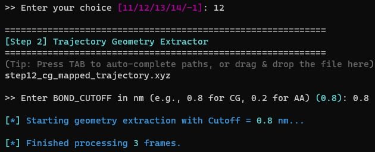
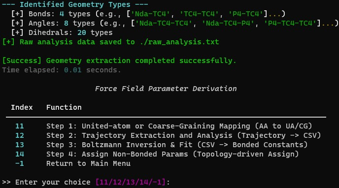
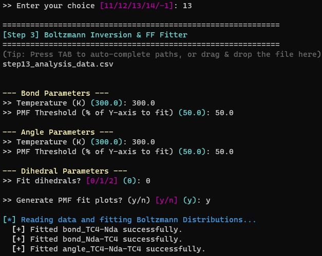
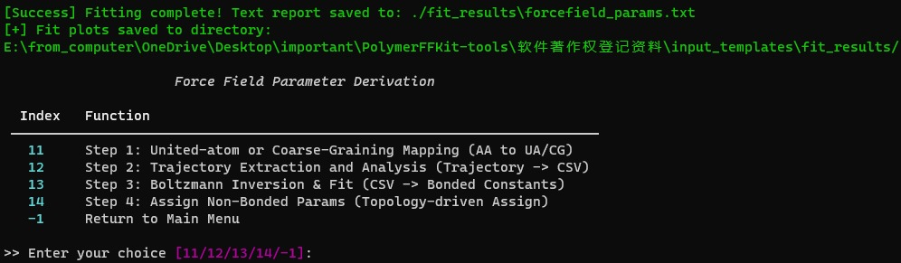
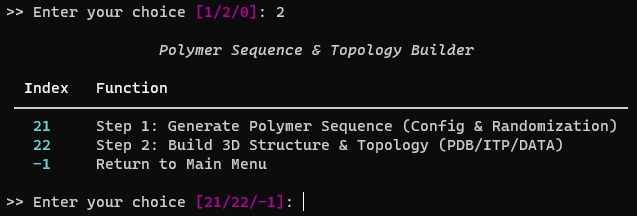
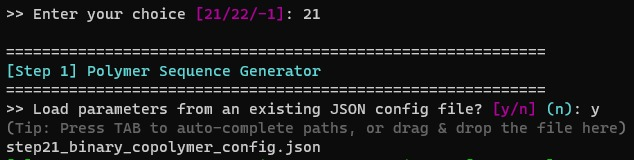
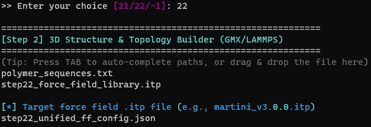
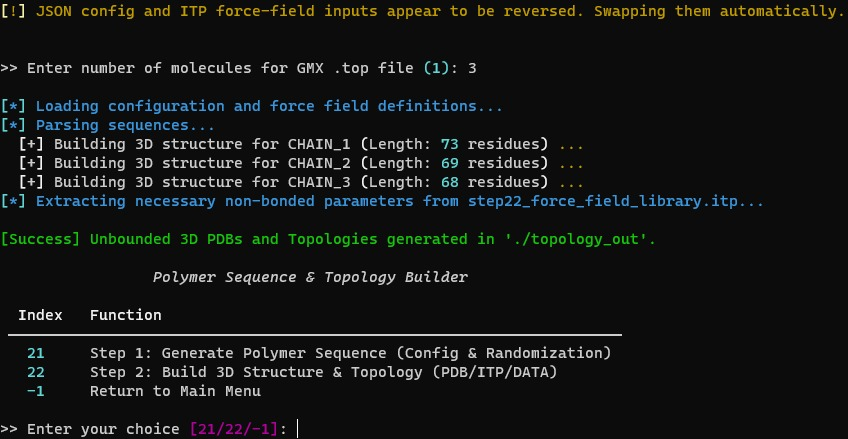

PolymerFFKit Instructions with Screenshots
1. Introduction
1.1 Purpose
This document is the Standard Screenshot Manual for PolymerFFKit (Polymer Force Field Parameter Fitting and Topology Building Tool Software). It is prepared to support the software copyright registration application by visually demonstrating the functional interfaces and operational workflows of the software through screenshots. This manual is intended for software copyright reviewers to understand the functional composition and user interaction methods of the software.
1.2 Background
PolymerFFKit is a force field parameter fitting and topology building tool designed for polymer molecular dynamics simulations. Independently developed, it provides molecular dynamics researchers with a complete workflow from all-atom trajectories to coarse-grained force field parameters, encompassing trajectory mapping, geometric analysis, Boltzmann inversion fitting, non-bonded parameter assignment, polymer sequence generation, and three-dimensional structure and topology building.
The software adopts a command-line interactive interface (Terminal User Interface, TUI) built on the Python Rich library, providing user-friendly terminal menu navigation and interactive input prompts with Tab path auto-completion support.
2. Software Overview
2.1 Features
PolymerFFKit consists of two major functional modules:
- Trajectory Analysis and Force Field Generation Module: This module includes four steps: molecular mapping (Step 11, supporting AA/UA/CG resolutions), trajectory geometry extraction and analysis (Step 12, automatic identification of bond length, angle, and dihedral distributions), Boltzmann inversion and force field fitting (Step 13, converting frequency distributions to potential energy curves with harmonic/Fourier/RB fitting), and non-bonded parameter assignment (Step 14, interactive assignment of Lennard-Jones parameters and partial charges).
- Polymer Sequence and Topology Builder Module: This module includes two steps: polymer sequence generation (Step 21, supporting precise-ratio random copolymer sequence generation) and 3D structure and topology building (Step 22, constructing 3D atomic coordinates using the NERF algorithm and outputting files in PDB, GROMACS ITP/TOP, and LAMMPS DATA formats).
The main menu interface of the software is shown in Figure 1.

2.2 Performance
The software delivers stable performance, utilizing vectorized numerical computation (NumPy) and scientific fitting algorithms (SciPy) to efficiently process large-scale molecular dynamics trajectory data. It supports output in multiple force field formats, meeting the requirements of different molecular dynamics simulation software (GROMACS, LAMMPS).
3. Operating Environment
3.1 Hardware Requirements
CPU: Intel / AMD x86-64 architecture processor
Memory: 16 GB RAM or above
Storage: 512 GB SSD or above
Display: 1920x1080 or higher resolution
3.2 Software Requirements
Operating System: Windows 10/11, Ubuntu 22.04+, macOS 13+
Runtime Environment: Python 3.10 or above
Dependencies: NumPy, SciPy, Pandas, Matplotlib, Rich, prompt_toolkit, etc.
External Software: GROMACS (optional, for force field validation), LAMMPS (optional, for force field validation)
4. Software Interface Screenshots and Descriptions
This software uses a command-line interactive interface (Terminal User Interface, TUI). All operations are performed within the terminal. The following sections present screenshots and descriptions of each functional interface in order of the modules.
4.1 Program Startup and Main Menu Interface
Upon program startup, the terminal displays the ASCII-art-style launch banner of PolymerFFKit, featuring a cyan-gradient 'POLYMER FF KIT' logo, followed by the version number (V1.0.0) and the multi-scale identifier (AA/UA/CG). The main menu offers three options:
- Trajectory Analysis & Force Field Generation
- Polymer Sequence & Topology Builder
- Exit gracefully
Users select the desired function by entering 1, 2, or 0. The main menu interface is shown in Figure 1. Additionally, users may press Ctrl+C at any time to safely interrupt the program.
4.2 Force Field Parameter Derivation Module
After selecting '1' in the main menu, the program enters the Force Field Parameter Derivation sub-module. This is one of the core functionalities of PolymerFFKit, providing a complete workflow from all-atom trajectories to force field parameters.
4.2.1 Force Field Parameter Derivation Submenu
This submenu displays four step options:
- Step 11: United-atom or Coarse-Graining Mapping (AA to UA/CG)
- Step 12: Trajectory Extraction and Analysis (Trajectory to CSV)
- Step 13: Boltzmann Inversion & Fit (CSV to Bonded Constants)
- Step 14: Assign Non-Bonded Params (Topology-driven Assign)
- -1: Return to Main Menu
The Force Field Parameter Derivation submenu interface is shown in Figure 2.

4.2.2 Step 11: Trajectory Mapping and Extraction
This step implements molecular trajectory resolution conversion, one of the core algorithms of the software. The operational workflow is as follows:
- Select target mapping resolution (AA/UA/CG)
- Input the all-atom trajectory file path (.xyz format, with Tab auto-completion)
- The system automatically scans and displays the total number of trajectory frames
- Enter the percentage of the trajectory to process (e.g., 80 for the last 80%)
- For UA mode: choose 'auto' (automatic hydrogen-to-heavy-atom collapse) or 'custom' mapping rules
- For CG mode: provide a mapping rules JSON file
- Select center calculation method (COM = center of mass, COG = center of geometry)
- Specify the output trajectory file path
The system then begins trajectory processing, outputting progress information every frame. The operational interface of Step 11 is shown in Figure 3.

Upon completion, the system displays a 'Task Complete' success message, including the number of processed frames, the output file path, and the total elapsed time. The completion interface of Step 11 is shown in Figure 4.

4.2.3 Step 12: Trajectory Geometry Extraction and Analysis
This step automatically extracts bond length, bond angle, and dihedral angle geometric distribution data from the mapped trajectory file. The operational workflow is as follows:
- Input the mapped trajectory file path (.xyz format)
- Specify the output raw analysis data file path (default: ./raw_analysis.txt)
- Enter the bond cutoff distance (BOND_CUTOFF), with recommended values of 0.8 nm for CG and 0.2 nm for AA
The system then scans and analyzes all frames: it uses a distance-cutoff-based adjacency matrix to automatically identify chemical bond connectivity, and exhaustively computes all bond lengths, bond angles, and dihedral angles for each frame. Progress is reported every 100 frames. The operational interface of Step 12 is shown in Figure 5.

After processing completes, the system displays statistics on identified geometry types (number of bond types, angle types, dihedral types) and outputs the raw analysis data file, which preserves all measured values for each bond/angle/dihedral type. The completion interface of Step 12 is shown in Figure 6.

4.2.4 Step 13: Boltzmann Inversion and Force Field Fitting
This step converts the geometric distribution data extracted in Step 12 into a Potential of Mean Force (PMF) via Boltzmann inversion and performs force field function fitting. The operational workflow is as follows:
- Input the raw analysis data file from Step 12 (CSV or text format)
- Specify the output directory (default: ./fit_results)
- Set bond fitting parameters: temperature (default 300 K) and PMF threshold percentage (default 50%)
- Set angle fitting parameters: temperature (default 300 K) and PMF threshold percentage (default 50%)
- Select dihedral fitting type: 0 = skip, 1 = periodic Fourier series (order 1-4), 2 = Ryckaert-Bellemans function
- Choose whether to generate PMF fitting plots (default: yes)
The operational interface of Step 13 is shown in Figure 7.

The system sequentially performs PMF calculation, noise filtering, and curve fitting for each geometry type. Fitting results are saved as a text report file (forcefield_params.txt) containing equilibrium values (x0) and force constants (k) for bonds and angles, as well as order-specific parameters for dihedrals. If plotting is enabled, each fitted item generates a PNG-format fitting curve plot. The completion interface of Step 13 is shown in Figure 8.

4.2.5 Step 14: Non-Bonded Parameter Assignment
This step integrates the bonded parameters obtained from fitting with non-bonded parameters (Lennard-Jones parameters and partial charges) from the force field library into a unified force field configuration file. The operational workflow is as follows:
- Input the mapping rules JSON file path (from Step 11)
- Input the fitted parameters TXT file path (from Step 13)
- Specify the output unified configuration JSON file path
- Select the target resolution (AA/UA/CG)
- Select the reference L-J force field library: choose from built-in libraries (e.g., Martini 3.0), or provide a custom ITP file, or skip for manual input only
- Optional: load an external charge file (e.g., RESP/AM1-BCC computed partial charges)
The operational interface of Step 14 is shown in Figure 9.

The program then enters the interactive bead parameter assignment phase. The system displays each bead name to be assigned one by one. The user specifies the force field type, and the system automatically retrieves the corresponding L-J parameters (sigma, epsilon) and mass from the ITP database. If the type is not found in the database, manual input mode is entered. The user can confirm or edit the charge value and set the mass for each bead. The bead parameter assignment interface of Step 14 is shown in Figure 10.

After all beads are assigned, the system displays a summary table of final assigned parameters (including bead name, force field type, mass, charge, and L-J source), and exports the complete configuration as a unified force field configuration JSON file (ff_unified_config.json) for subsequent topology building steps. The completion interface of Step 14 is shown in Figure 11.

4.3 Polymer Sequence and Topology Builder Module
After selecting '2' in the main menu, the program enters the Polymer Sequence and Topology Builder module. This module provides a complete workflow from sequence design to 3D structure construction.
4.3.1 Builder Submenu
This submenu displays two step options:
- Step 21: Generate Polymer Sequence (Config & Randomization)
- Step 22: Build 3D Structure & Topology (PDB/ITP/DATA)
- -1: Return to Main Menu
The Builder submenu interface is shown in Figure 12.

4.3.2 Step 21: Polymer Sequence Generation
This step generates random copolymer sequences based on user-specified monomer types, ratios, and degree of polymerization. The operational workflow is as follows:
- Optionally load parameters from an existing JSON configuration file, or manually input
- In manual mode: enter repeat unit names (comma-separated, e.g., C, T, V)
- Enter the corresponding ratios for each unit (e.g., 5.5, 0.5, 4.0)
- Enter the total degree of polymerization (DP, default: 100)
- Enter the number of sequences to generate (default: 3)
- Choose whether to use strict mode to ensure exact monomer ratios
- Specify the output file prefix
The operational interface of Step 21 is shown in Figure 13.

Upon generation completion, the system outputs three files: (1) a FASTA-format sequence file (_sequences.txt); (2) a sequence composition analysis file (_analysis.txt, containing actual percentages of each monomer in each sequence); and (3) a JSON configuration file (_config.json, preserving parameters for reproducibility). The completion interface of Step 21 is shown in Figure 14.

4.3.3 Step 22: 3D Structure and Topology Building
This step is one of the core functionalities of PolymerFFKit. It converts one-dimensional polymer sequences into three-dimensional atomic coordinates and generates topology files for multiple molecular dynamics software packages. The operational workflow is as follows:
- Input the sequence file path generated in Step 21 (.txt format)
- Input the unified force field configuration JSON file path (from Step 14)
- Input the non-bonded parameter library ITP file path (e.g., Martini force field library)
- Specify the output directory (default: ./topology_out)
- Enter the number of molecules (for the GROMACS .top file)
The operational interface of Step 22 is shown in Figure 15.

After loading the configuration, the system uses the NERF (Nearest Neighbor Effect Resolution Function) algorithm to construct complete 3D atomic coordinates from the 1D sequence: the first atom is placed at the origin, the second atom along the X-axis, and subsequent atoms are positioned step by step based on bond length, bond angle, and dihedral angle parameters. Main-chain atoms are arranged linearly, and branch atoms follow branch definitions and dihedral offset rules. For each sequence, the system generates: a PDB file (CHAIN_N.pdb, with CONECT bond records), a LAMMPS data file (CHAIN_N.data, containing Masses, Bond Coeffs, Angle Coeffs, Atoms, Bonds, and Angles sections), and merged GROMACS ITP/TOP files. The processing and completion interface of Step 22 is shown in Figure 16.

4.4 Program Exit Interface
After selecting '0' in the main menu, the program displays the exit message 'Exiting PolymerFFKit. Have a great day!' and terminates normally. Users may also press Ctrl+C at any time to interrupt the program; the program will display 'Program interrupted by user. Exiting...' before exiting safely. The program exit interface is shown in Figure 17.